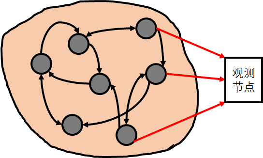

问题描述
考虑模型循环网络模型：
其中 $x(k) \in R^N$表示网络节点在激活前的状态，$W\in R^{N\times N}$表示网络结点之间相互连接的权重，网络的输出节点为 $\{x_i(k)| i\in O\}$，$O$为所有输出（或称“观测”）单元的下标集合
训练的目标是为了减少观测状态和预期值之间误差，即最小化损失函数：
其中 $d_i(k)$ 表示 $k$ 时刻第 $i$ 个节点的预期值

符号约定
将矩阵 $W$ 拉成列向量，记为 $w$
把所有时间的状态拼成列向量，记为 $x$
将RNN 的训练视为约束优化问题，(1)式转化成约束条件:
记
Atiya-Parlos 算法回顾
以上是经典的梯度下降法的思维，但是 Atiya-Parlos 提出了另一种优化思路：不是朝着参数的梯度方向更新，但仍使代价函数下降
该算法的思想是互换网络状态 $x(k)$ 和权重矩阵 $W$ 的作用：将状态视为控制变量，并根据 $x(k)$ 的变化确定权重的变化。 换句话说，我们计算 $E$ 相对于状态 $x(k)$ 的梯度，并假设状态在该梯度的负方向 $\displaystyle{\Delta x_i(k) = -\eta\frac{\partial E}{\partial x_i(k)} }$ 上有微小变化。
接下来，我们确定权重 $W$ 的变化 $\Delta w$，以使由权重变化导致的状态变化尽可能地接近目标变化 $\Delta x$
该算法的细节如下：
由约束条件得：
故已知 $\Delta x$ 时，可得：
需要注意逆矩阵不一定存在，故
这就是权重 $W$ 的更新规则
计算细节
计算 $\frac{\partial g}{\partial w}$
其中
故
令
$\gamma$ 表示由 $\Delta x$ 提供的误差信息，它的计算放在本文最后，先假设它已经求出来了
则
所以
其中
注意：上述 $\Delta W$ 是基于 $1,2,\ldots, K$ 整个时间段的更新，不妨称之为 $\Delta W_{batch}$
下面将更新公式拆解在线更新（online updating）的形式：
等式右端对应每一时刻的更新量
在第 $K$ 时刻的第 $i$ 个神经元的输入权重的更新量：
可以看出，APRL 的更新规则由当前时刻的误差和 w 的累计更新（动量）组成
随着 $K \to \infty$，易知$\sum_{k=1}^{K-1} \Delta w^T_i(k) \to const, C_{K-2}C_{K-1}^{-1} \to I$，所以第二项趋于零
BPDC 更新规则
BPDC 对 APRL 的在线算法做了简单粗暴的近似
该近似不试图累积完整的相关矩阵 $C_k$，也舍弃了先前误差的累积，而且只计算瞬时相关 $C(k)$：
利用矩阵求逆引理：
所以
计算 $\gamma$
关键在与计算 $\frac{\partial g}{\partial x}$
其中
所以
代入到 BPDC 更新规则：
参考文献
- J.J. Steil, Backpropagation-decorrelation: online recurrent learning with O(N) complexity, in: Proceedings of the International Joint Conference on Neural Networks (IJCNN), vol. 1, 2004, pp. 843–848.
- J.J. Steil, Online stability of backpropagation-decorrelation recurrent learning, Neurocomputing 69 (2006) 642–650.
- J.J. Steil, Online reservoir adaptation by intrinsic plasticity for backpropagation-decorrelation and echo state learning, Neural Networks 20 (3) (2007) 353–364.